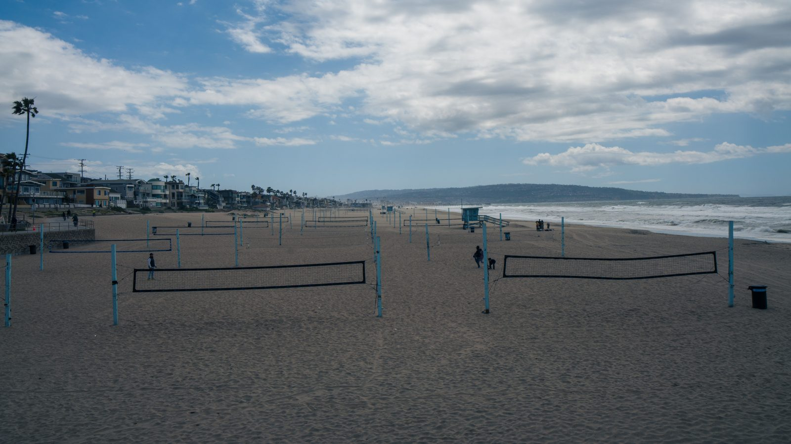

Itapema · Esporte
Itapema · EsporteItapema leva 33 atletas ao Parajasc, em cinco modalidades
A delegação de agosto, que serve de régua para os 84 atletas desta semana.
A Prefeitura anunciou em 8 de outubro a delegação que foi a Lages: 84 atletas em ciclismo, ginástica rítmica, jiu-jítsu, judô, taekwondo e vôlei de praia. Fomos ler a nota que a Fesporte publicou no domingo com os primeiros campeões da 25ª Olimpíada Estudantil Catarinense. O jiu-jítsu e o taekwondo, duas das seis modalidades de Itapema, já encerraram, e os pódios por município trazem Florianópolis, Chapecó, Seara, Joinville, Indaial, Blumenau, São José, Balneário Camboriú, Itajaí e Tijucas. Itapema não está em nenhum. Restam ciclismo, vôlei de praia, judô e ginástica rítmica, todos nesta semana.
Em 30 segundos · Modo de Leitura, formato original Santa Informa
Itapema está na OLESC, em Lages.
É a Olimpíada Estudantil Catarinense.
Esta é a 25ª edição.
Ela começou em 6 de outubro.
Termina em 18 de outubro.
A delegação da cidade tem 84 atletas.
Eles disputam seis modalidades.
Ciclismo e ginástica rítmica.
Jiu-jítsu e judô.
Taekwondo e vôlei de praia.
No total, a OLESC tem 5.908 atletas.
Todos com até 16 anos.
São 113 municípios na disputa.
E 877 técnicos e dirigentes.
Os 84 de Itapema são 1,42% do total.
Conta nossa, sobre os números oficiais.
Duas modalidades da cidade já acabaram.
O jiu-jítsu e o taekwondo.
A Fesporte publicou os campeões no domingo.
No jiu-jítsu, Florianópolis levou os dois naipes.
No taekwondo, Chapecó e Seara.
São 12 lugares de pódio nessas duas.
Itapema não aparece em nenhum.
Três lugares ficaram com vizinhos nossos.
Balneário Camboriú, Tijucas e Itajaí.
Atenção: a lista é por município.
Ela não traz a medalha individual.
Então não dá para saber dela quem subiu ao pódio.
Faltam quatro modalidades de Itapema.
Ciclismo, de 13 a 16 de outubro.
Vôlei de praia, de 13 a 18.
Judô, de 15 a 17.
Ginástica rítmica, de 16 a 18.
Ou seja: tem Itapema competindo todo dia.
Em agosto a cidade foi ao Parajasc.
Levou 33 atletas, em cinco modalidades.
Agora são 84, duas vezes e meia mais.
A OLESC acaba no dia 18.
E o JEI daqui começa no dia 19.
Um dia de intervalo entre os dois.
Poder PúblicoPublicada em Redação Santa Informa

Itapema está na 25ª OLESC, a Olimpíada Estudantil Catarinense, com 84 atletas em seis modalidades. A competição acontece em Lages, começou em 6 de outubro e vai até o dia 18. Duas das seis modalidades da cidade, o jiu-jítsu e o taekwondo, já terminaram. A Fesporte publicou no domingo a nota com os campeões, e o nome de Itapema não aparece em nenhum dos pódios por município divulgados. As outras quatro entram a partir desta terça-feira.
A delegação foi anunciada pela Prefeitura em 8 de outubro, nas seis modalidades: ciclismo, ginástica rítmica, jiu-jítsu, judô, taekwondo e vôlei de praia. Pelo calendário da própria nota, o ciclismo disputa de 13 a 16, o vôlei de praia de 13 a 18, o judô de 15 a 17 e a ginástica rítmica de 16 a 18. Quatro das seis estão espremidas nesta semana, e quem quiser acompanhar tem atleta de Itapema competindo todo dia até o encerramento.
A nota da Fesporte diz que a sexta-feira de competições definiu os campeões do jiu-jítsu, do taekwondo e da ginástica artística, e que as três encerraram a participação nesta edição. Itapema está em duas delas. No jiu-jítsu, Florianópolis levou os dois naipes, com Indaial em segundo e Blumenau em terceiro no feminino, e São José em segundo e Balneário Camboriú em terceiro no masculino. No taekwondo, Chapecó foi campeão no masculino, com Joinville e Tijucas atrás, e Seara no feminino, seguida por Joinville e Itajaí. São 12 lugares de pódio nessas duas modalidades. Três ficaram com cidades da nossa faixa de litoral e nenhum com Itapema.
A OLESC inteira reúne 5.908 atletas de até 16 anos, de 113 municípios, com 877 técnicos e dirigentes. Os 84 de Itapema são 1,42% desse total, conta nossa. Em agosto, no Parajasc, a cidade tinha levado 33 atletas em cinco modalidades, como contamos na época: a delegação de agora é duas vezes e meia maior. E o calendário do esporte escolar daqui não respira: a OLESC acaba em 18 de outubro e o JEI, os Jogos Escolares de Itapema, começa no dia 19.
O resumo de 30 segundos está no topo e a versão completa é o texto acima. Aqui ficam as três leituras da casa sobre o mesmo assunto.
Clara, a otimista
Oitenta e quatro. Esse é o número que eu fico olhando. Em agosto a cidade levou 33 ao Parajasc, e agora são 84 adolescentes de Itapema competindo em Lages, em seis esportes diferentes. Ciclismo, ginástica rítmica, jiu-jítsu, judô, taekwondo e vôlei de praia não acontecem por acaso: cada um desses exige professor, horário, espaço e uma família levando e buscando durante o ano inteiro.
E a semana mal começou. Quatro das seis modalidades ainda vão entrar, do ciclismo de terça à ginástica rítmica de domingo. Quem já foi a uma competição assim sabe que o resultado é só uma parte: ficar oito dias fora com os colegas, dormir em alojamento, perder e voltar no dia seguinte, isso fica no menino e na menina muito depois da tabela. No dia 19 começa o JEI aqui, e boa parte dessa turma vai estar lá, só que em casa.
Seu Prudêncio, o criterioso
Vale acompanhar duas coisas que não estão publicadas. A primeira é o resultado. O jiu-jítsu e o taekwondo acabaram, a Fesporte já publicou os campeões, e quem quiser saber como foi Itapema precisa abrir a nota do estado e ler os pódios, porque a Prefeitura ainda não voltou ao assunto. Anunciar a ida e não contar a volta deixa o trabalho pela metade, e é o pedaço mais barato de todos.
A segunda merece atenção: o custo. Levar 84 atletas, mais os técnicos, e sustentar essa gente em Lages por até 13 dias tem preço de transporte, hospedagem e alimentação, e esse número não aparece em lugar nenhum do que foi divulgado. Não estou dizendo que o gasto é indevido. Estou dizendo que ele deveria ser público, porque é dinheiro de todo mundo e porque, publicado, ele serve de argumento na hora de pedir mais verba para a formação esportiva.
Dito isso, o mérito está aí e precisa ser reconhecido. Seis modalidades numa cidade do porte de Itapema significa seis estruturas de treino funcionando ao mesmo tempo, com professor e calendário, e não um esporte só puxando tudo. Isso leva anos para montar e se desmancha rápido quando ninguém cuida. Uma sugestão útil seria a Secretaria publicar, no fim da OLESC, uma nota com o que a cidade conquistou e quanto custou. Com os dois números na mesa, a conversa sobre investir em base fica fácil de fazer.
Caco, o sarcástico
Fui procurar como Itapema tinha se saído no jiu-jítsu e no taekwondo e acabei fazendo turismo pelo estado inteiro. Achei Florianópolis, achei Chapecó, achei Seara, achei Joinville duas vezes. Achei até Tijucas, ali do lado. Itapema, nada. Doze lugares de pódio e a gente passando longe de todos eles.
Reclamação registrada: a nota que conta a ida tem foto, declaração e calendário completo. A nota que conta a volta não existe. Fica parecendo aquele parente que manda mensagem avisando que está indo e depois some, e você fica no sofá imaginando o pior.
Mas tá bom porque ainda tem semana inteira pela frente. Faltam quatro modalidades, uma delas é vôlei de praia, que é basicamente o quintal da nossa cidade. Se tem um lugar onde a gente não pode passar vergonha, é na areia. E se passar, paciência: continuo achando que 84 adolescentes treinando o ano todo vale mais que qualquer tabela de classificação, e isso eu digo sem ironia nenhuma.
Fontes: os 84 atletas de Itapema, as seis modalidades, as datas de cada uma e a fala do secretário de Esportes estão na nota Itapema disputa fase estadual da OLESC 2026, publicada pela Prefeitura de Itapema em 8 de outubro de 2026. Os campeões do jiu-jítsu, do taekwondo e da ginástica artística, e a informação de que as três modalidades encerraram a participação, estão em Olesc 2026 define os primeiros campeões, publicada pela Fesporte em 11 de outubro de 2026. Os 5.908 atletas, os 113 municípios, os 877 técnicos e dirigentes, as 18 modalidades, as 6.785 pessoas envolvidas e o período de 6 a 18 de outubro estão em 25ª edição da Olesc terá quase 6 mil atletas em Lages, da Fesporte, de 5 de outubro de 2026. As duas páginas da Fesporte foram abertas em 12 de outubro de 2026. Os 33 atletas do Parajasc estão na nossa matéria Itapema leva 33 atletas ao Parajasc, em cinco modalidades, de 17 de agosto de 2026. A data de início do JEI está na nossa matéria Itapema marca os jogos escolares de 2026: JEIzinho em 30 de setembro e JEI a partir de 19 de outubro. O 1,42%, os 12 lugares de pódio, os três que ficaram com cidades vizinhas e a comparação com agosto são contas nossas sobre esses números.
Itapema · EsporteA delegação de agosto, que serve de régua para os 84 atletas desta semana.
 Itapema · Esporte
Itapema · EsporteO calendário do esporte escolar da cidade, que recomeça um dia depois de a OLESC acabar.
 Itapema · Esporte
Itapema · EsporteOutra frente do esporte da cidade, essa nascida de projeto de lei da Câmara.